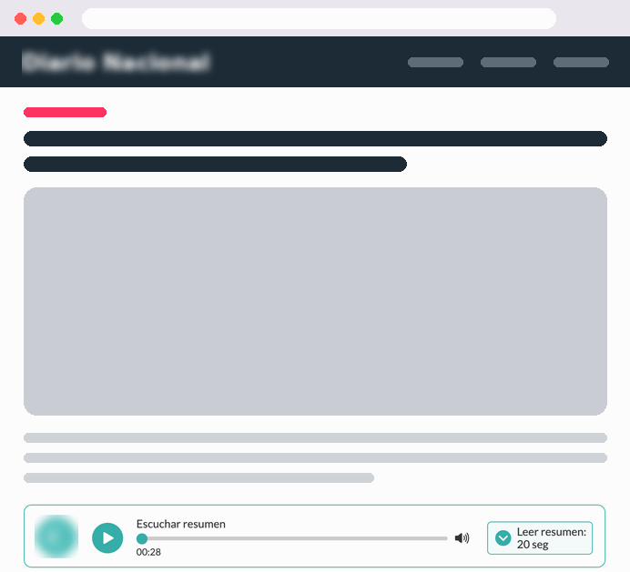
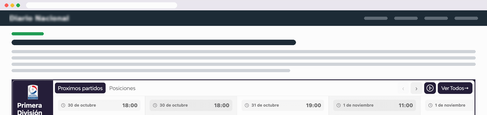
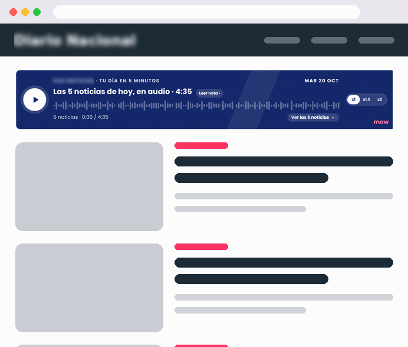
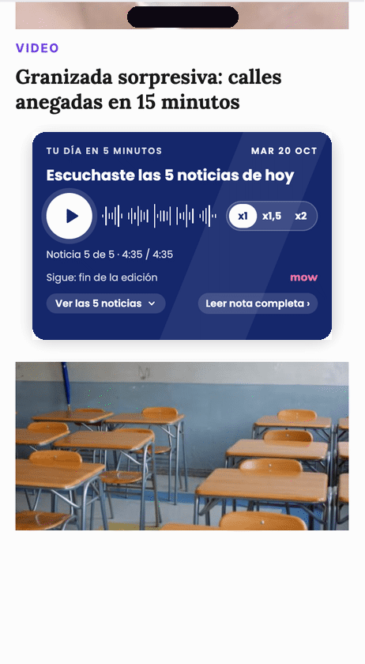
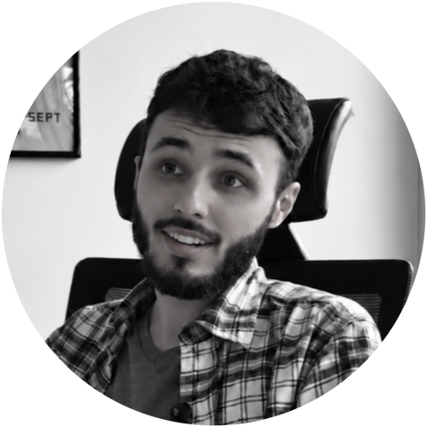

Solo 1 de cada 100 visitas con resumen de IA terminó en un clic a sus fuentes. Fuentes: Pew Research Center, 2025 (−47% y 1 de 100) y Chartbeat vía Reuters Institute (−33%, más de 2.500 sitios, nov 2024 a nov 2025).
Summary texto/audio
Transformá tus artículos en nuevas experiencias de consumo
Resúmenes generados con IA, en texto, audio o ambos.
Summary de audio
Permite consumir contenido mientras el usuario navega o hace otras actividades.
Amplía el acceso a la información más allá de la lectura tradicional.
Summary de texto
Facilita una lectura rápida y eficiente.
Destaca las ideas principales para identificar rápido el contenido relevante.
Valor para el publisher
Mayor engagement: una experiencia más accesible.
Más permanencia: más tiempo en tu sitio.
Nuevos ingresos: ads de audio y display integrados.

Más formas de consumir contenido, sin sumar trabajo editorial.
Live Data Widget
Información relevante y actualizada, directamente en tu sitio

Verticales
Deportes
Clima
Finanzas
Lotería
Horóscopo
Juegos
Valor para el publisher
Mayor engagement
Datos en vivo que dan motivos para volver.
Experiencia personalizada
Adaptado a cada sitio.
Monetización incremental
Publicidad integrada.
El contenido adecuado, para la audiencia adecuada, en el lugar indicado.
MOW Brief
El resumen del día, con la voz de tu medio
5
noticias del día
1
resumen breve
al día, en minutos
¿Quieren profundizar en alguna noticia? Cada resumen los lleva al artículo original y genera nuevo tráfico hacia tus contenidos.
Valor para el publisher
Acceso a lo relevante
Facilita el acceso a la información más importante.
Lectores con poco tiempo
Mejora su experiencia de consumo.
Más descubrimiento
Promueve otros contenidos del medio.
Nuevos ingresos
Monetización con publicidad integrada.

Menos tiempo para encontrar lo importante. Más oportunidades para descubrir tu contenido.
Receptividad
Publicidad en el momento en que el usuario está prestando atención
Leemos las señales de comportamiento en tiempo real y mostramos el anuncio cuando el usuario está realmente mirando la pantalla.
Funciona en
Summary
Live Data Widget
MOW Brief
Mayor viewability
Prioriza las oportunidades con más chances de que el anuncio se vea.
Mejores CTRs
Puede favorecer una mayor interacción con la publicidad.
Mayor potencial de CPM
Impresiones con mejores señales de atención.
Más eficiencia
Puede ayudar a mejorar el rendimiento del inventario publicitario.
Señales en tiempo real
% de visibilidad
Visibilidad de la pestaña
Velocidad del scroll
Interacción reciente
Receptividad detectada
Se muestra el anuncio →

No se trata solo de mostrar anuncios, sino de mostrarlos cuando tienen más posibilidades de ser vistos.
Probalo sin compromiso
Descubrí el potencial de MOW Player en tu propio sitio
Cada medio tiene una audiencia, una estrategia y necesidades diferentes. Por eso te proponemos un test sin compromiso para evaluar el rendimiento de nuestras soluciones en tu sitio.
1
Elegimos juntos la solución más adecuada para tu audiencia.
2
Implementamos un test para evaluar su funcionamiento y rendimiento.
3
Analizamos los resultados y definimos los próximos pasos según tu experiencia y conformidad.
Sin compromiso de continuidad.
La decisión de seguir adelante depende de tu satisfacción con los resultados.

Mateo Olivera
Sales Director
Programmatic, CTV & DOOH | Live Data Widget | Adops